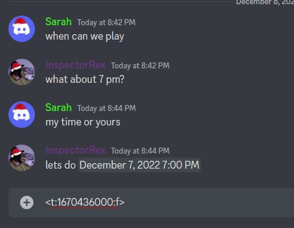

How to use?
Timestamps Explained
Discord Timestamps are rendered by the End-Users Computer, so the Timestamp will display different Results for everyone in different Timezones!
Discord Timestamps are generated using
<t:unix_seconds:FORMAT>.
Format herby refers to the Available Formats offered by Discord.
Easy to Rember using their Corresponding Names
The Format Above can then easily be sent in a normal Message by Users or Bots.
mybot/timestamp.js
// Sends the Message to Discord as
> Your Reminder will alert you in 32 Years1. Select a Date and Time
2. Click a Timestamp Displayed Above
3. Paste the Timestamp into Discord
How to use?